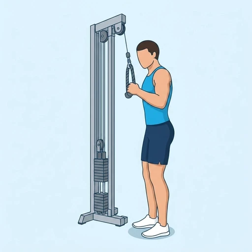

Single Arm Tricep Pushdown
A triceps isolation exercise performed one arm at a time on a cable machine with a single handle.
Upper arms · Cable Machine · Intermediate


Muscles worked by the Single Arm Tricep Pushdown
Primary
Secondary
Also called: tricep, triceps, triceps brachii, horseshoe, tris.
Equipment
Also called: cable pulley, functional trainer, cable crossover, cable column, cable station, pulley machine.
How to do the Single Arm Tricep Pushdown
- Attach a single handle to a high cable pulley.
- Grasp the handle with one hand and keep your elbow pinned to your side.
- Press the handle down until your arm is fully extended.
- Squeeze the triceps at the bottom.
- Slowly return to the start position.
- Complete reps on one side, then switch.
Form tips
- Keep your elbow pinned to your side throughout.
- Avoid leaning forward to add momentum.
- Fully extend your arm at the bottom for a complete contraction.
At a glance
| Body part | Upper arms |
|---|---|
| Category | Strength |
| Force type | Push |
| Mechanic | Compound |
| Difficulty | Intermediate |
| Equipment | Cable Machine |
| Goals | Hypertrophy, Strength |
| Tags | Knee safe, Shoulder safe, No axial load, Lower back safe |
| MET | 6.0 (metabolic equivalent, for calorie estimates) |
| Unilateral | Yes |
| Bodyweight | No |
| Dataset id | single-arm-tricep-pushdown |
Single Arm Tricep Pushdown in German & Spanish
| German | Einarmiges Trizepsdrücken am Kabelzug |
|---|---|
| Spanish | Extensión de Tríceps a Un Brazo en Polea |
Descriptions, instructions and tips ship in all three languages in the JSON.
Related exercises
Exercise data (JSON)
The record below is exactly what exercises.json ships for this exercise — names, descriptions, instructions and tips in English, German and Spanish.
{
"id": "single-arm-tricep-pushdown",
"name_en": "Single Arm Tricep Pushdown",
"name_de": "Einarmiges Trizepsdrücken am Kabelzug",
"name_es": "Extensión de Tríceps a Un Brazo en Polea",
"description_en": "A triceps isolation exercise performed one arm at a time on a cable machine with a single handle.",
"description_de": "Eine Trizeps-Isolationsübung, bei der abwechselnd ein Arm an einem Kabelzuggerät mit Einzelgriff trainiert wird.",
"description_es": "Un ejercicio de aislamiento de tríceps realizado con un brazo a la vez en una máquina de polea con una sola manija.",
"category": "strength",
"force_type": "push",
"mechanic": "compound",
"difficulty": "intermediate",
"equipment": "cable",
"body_part": "upper_arms",
"primary_muscles": [
"triceps_brachii"
],
"secondary_muscles": [
"forearm_extensors"
],
"goals": [
"hypertrophy",
"strength"
],
"tags": [
"knee_safe",
"shoulder_safe",
"no_axial_load",
"lower_back_safe"
],
"variation_group": "tricep-pushdown",
"is_unilateral": true,
"is_bodyweight": false,
"instructions_en": [
"Attach a single handle to a high cable pulley.",
"Grasp the handle with one hand and keep your elbow pinned to your side.",
"Press the handle down until your arm is fully extended.",
"Squeeze the triceps at the bottom.",
"Slowly return to the start position.",
"Complete reps on one side, then switch."
],
"instructions_de": [
"Befestige einen Einzelgriff an einem hohen Kabelzug.",
"Greife den Griff mit einer Hand und halte den Ellbogen eng am Körper.",
"Drücke den Griff nach unten, bis der Arm vollständig gestreckt ist.",
"Spanne den Trizeps am unteren Punkt an.",
"Kehre langsam zur Ausgangsposition zurück.",
"Absolviere die Wiederholungen auf einer Seite, dann wechsle die Seite."
],
"instructions_es": [
"Coloca una manija individual en una polea alta.",
"Sujeta la manija con una mano y mantén el codo pegado al costado.",
"Empuja la manija hacia abajo hasta extender completamente el brazo.",
"Contrae el tríceps en la parte baja.",
"Vuelve lentamente a la posición inicial.",
"Completa las repeticiones de un lado y luego cambia."
],
"tips_en": [
"Keep your elbow pinned to your side throughout.",
"Avoid leaning forward to add momentum.",
"Fully extend your arm at the bottom for a complete contraction."
],
"tips_de": [
"Halte den Ellbogen durchgehend eng am Körper.",
"Vermeide es, dich für zusätzlichen Schwung nach vorne zu lehnen.",
"Strecke den Arm am unteren Punkt vollständig für eine vollständige Kontraktion."
],
"tips_es": [
"Mantén el codo pegado al costado en todo momento.",
"Evita inclinarte hacia adelante para generar impulso.",
"Extiende el brazo por completo en la parte baja para una contracción total."
],
"met": 6.0,
"images": {
"flat": {
"start": "images/flat/single-arm-tricep-pushdown-start.webp",
"peak": "images/flat/single-arm-tricep-pushdown-peak.webp"
}
}
}Fetch just this exercise
const { exercises } = await fetch(
"https://exercise-dataset.com/exercises.json"
).then(r => r.json());
const ex = exercises.find(e => e.id === "single-arm-tricep-pushdown");Free for personal and commercial in-app use with attribution (“Exercise data by RepDB”) — see the license and ready-made attribution snippets. Redistributing the data as a dataset or API is not permitted.